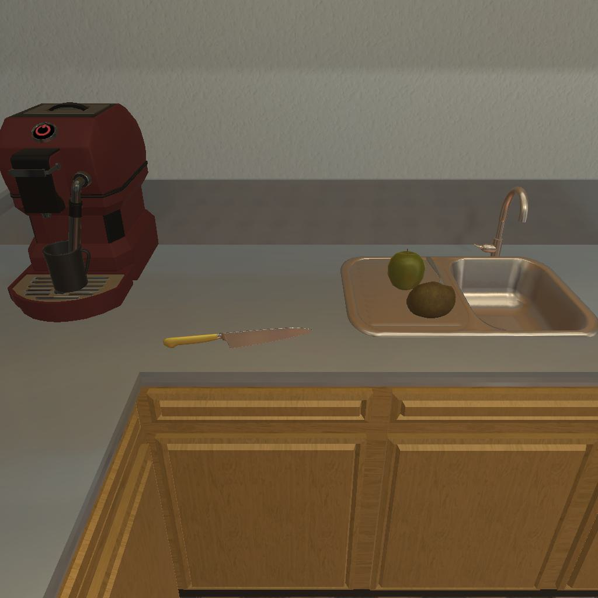

---------------------------------------------------------task: 20---------------------------------------------------------
--------------------------------------------------------------------------------------------------------------------------------------------------------------------
--------------------------------------------------------------------------------------------------------------------------------------------------------------------
Step:--------------------------------------------------------------------------18-------------------------------------------------------------------------------
----------------------------------------
VLM Prompt:
Image1:
Image2:
Image3:
**Instruction**
1. Analyze the provided images to identify all visible household objects and compare the difference between images (e.h. whether the object is opened or not and taken on hand or not), focusing on those relevant to the task description "heat some apple and put it in garbagecan."
2. Use the analysis of images and the task hint "The agent must find an object of the desired type, pick it up, go to a microwave, heat the object with the microwave, then find the correct location to place it, and put it down there. The agent does not need to use the microwave button or open the microwave to heat the object, and the agent just needs to do action that is "heat the object with the microwave"." to answer the question: what is the most reasonable action in the choices for the task description "heat some apple and put it in garbagecan"?
3. Decide and write the answer using the template: The answer is: (i): , where i is the real number. If there is no desired object in images, search every place based on **Initial Observation** to find the object. And if no one is exactly correct, choose a similar answer.
**Initial Observation**
You are in the middle of a room. Looking quickly around you, you can see cabinet (1-18), countertop (1-4), sink (1), drawer (1-7), sinkbasin (1), coffeemachine (1), microwave (1), garbagecan (1), stoveburner (1-4), toaster (1), fridge (1)
**Answer Choices**
(1): go to cabinet 2
(2): go to countertop 1
(3): go to cabinet 3
(4): go to cabinet 5
(5): go to sink 1
(6): go to cabinet 6
(7): go to drawer 1
(8): go to drawer 2
(9): go to sinkbasin 1
(10): go to cabinet 7
(11): go to cabinet 8
(12): go to coffeemachine 1
(13): go to microwave 1
(14): go to cabinet 9
(15): go to countertop 2
(16): go to cabinet 10
(17): go to drawer 3
(18): go to drawer 4
(19): go to garbagecan 1
(20): go to drawer 5
(21): go to cabinet 11
(22): go to cabinet 12
(23): go to cabinet 13
(24): go to cabinet 14
(25): go to stoveburner 1
(26): go to countertop 3
(27): go to stoveburner 2
(28): go to stoveburner 3
(29): go to stoveburner 4
(30): go to drawer 6
(31): go to cabinet 15
(32): go to cabinet 16
(33): go to cabinet 17
(34): go to cabinet 18
(35): go to toaster 1
(36): go to drawer 7
(37): go to countertop 4
(38): go to fridge 1
(39): open cabinet 1
(40): close cabinet 1
(41): examine cabinet 1
**Answer**
Let's think step by step by following the instructions.
----------------------------------------
----------------------------------------
Original Response:
Firstly, we need to identify all visible household objects in the provided images. In Image1, we can see a coffee machine on the countertop, a sink with two limes, and a saw on the countertop. There are no apples visible in the image, and the cabinets appear to be closed.
Next, we compare the difference between Image2 and Image3. However, both images are identical, showing closed cabinets with no visible difference.
Now, considering the task description "heat some apple and put it in garbagecan," we need to find an apple, which is not visible in any of the provided images. Therefore, we must search every place based on our Initial Observation to find the apple. The most logical place to find an apple would be in the fridge or a cabinet where food might be stored.
Since we need to heat the apple, we will eventually need to go to the microwave. But first, we need to find the apple.
Given the answer choices, the most reasonable action to find an apple would be to search the cabinets or the fridge. The closest options related to this would be:
(1): go to cabinet 2
(3): go to cabinet 3
(4): go to cabinet 5
(6): go to cabinet 6
(10): go to cabinet 7
(11): go to cabinet 8
(14): go to cabinet 9
(16): go to cabinet 10
(21): go to cabinet 11
(22): go to cabinet 12
(23): go to cabinet 13
(24): go to cabinet 14
(31): go to cabinet 15
(32): go to cabinet 16
(33): go to cabinet 17
(34): go to cabinet 18
(38): go to fridge 1
Since none of the options specify "search" or "find apple," we need to choose an action that could potentially lead to finding the apple. The fridge is a common place to store fruits, so it would be reasonable to check there first.
The answer is: (38): go to fridge 1.
----------------------------------------
----------------------------------------
>>> Refine Original VLM Response and Get Pure Action: go to fridge 1
----------------------------------------
-----------------------------------------------------------------
Running time: 26.126688241958618 seconds
Total Money: 12.753809999999998
-----------------------------------------------------------------
-----------------------------------------------------------------
Text Observation:You arrive at loc 39. The fridge 1 is open. On the fridge 1, you see a bread 1, a cup 1, a cup 2, and a bowl 1.
-----------------------------------------------------------------
UNSUCCEED